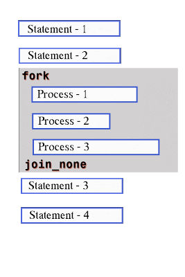

✅ fork...join_none in SystemVerilog
fork...join_none is used to start multiple processes in parallel and then immediately continue with the next statement, without waiting for any of them to finish.

This is non-blocking parallel execution — the main thread moves ahead while the forked processes continue running independently in the background.
üîπ Simple Example: fork...join_none
module fork_join_none_example;
initial begin
$display("Simulation started at time %0t", $time);
fork
#5 $display("Process 1 done at time %0t", $time);
#10 $display("Process 2 done at time %0t", $time);
join_none
$display("Immediately moving ahead at time %0t", $time);
end
endmodule
üí° What Happens:
- Both processes start at time 0.
join_nonedoes not wait for any process to finish.- So "Immediately moving ahead..." is printed right away at time 0, while the two processes finish at time 5 and 10.
üîπ Nested Example: fork...join_none
module nested_fork_join_none;
initial begin
$display("Simulation started at time %0t", $time);
fork
begin
#15 $display("Outer Task 1 done at %0t", $time);
end
fork
#5 $display("Inner Task A done at %0t", $time);
#10 $display("Inner Task B done at %0t", $time);
join_none
join_none
$display("All tasks started, continuing immediately at %0t", $time);
end
endmodule
üí° What Happens:
- Outer and inner tasks all start together.
- Because both
join_noneare used, the program does not wait for any task to finish. - The display after
join_noneis executed immediately at time 0.
üîπ Real-Life Analogy: Sending Notifications and Moving On üì©
Imagine you're an office manager sending out meeting invites to three teams:
- üìß You send all emails at once (fork).
- But you don’t wait for anyone to respond — you immediately go to lunch.
This is fork...join_none — everything runs in the background, but you don’t wait or watch. You just move on.
It’s useful when:
- You just want tasks to run independently, like background monitors or checkers.
- You don’t care when they end, only that they start.